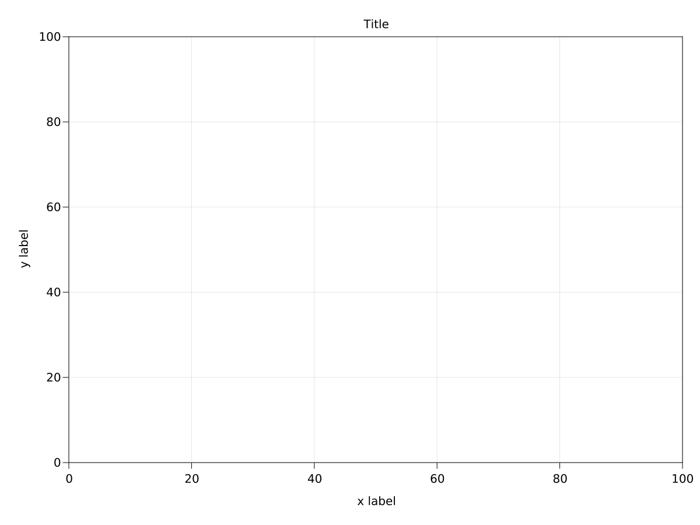
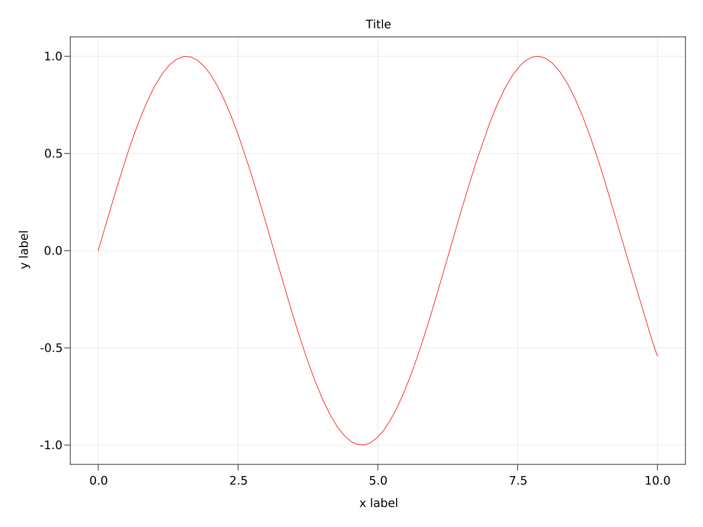
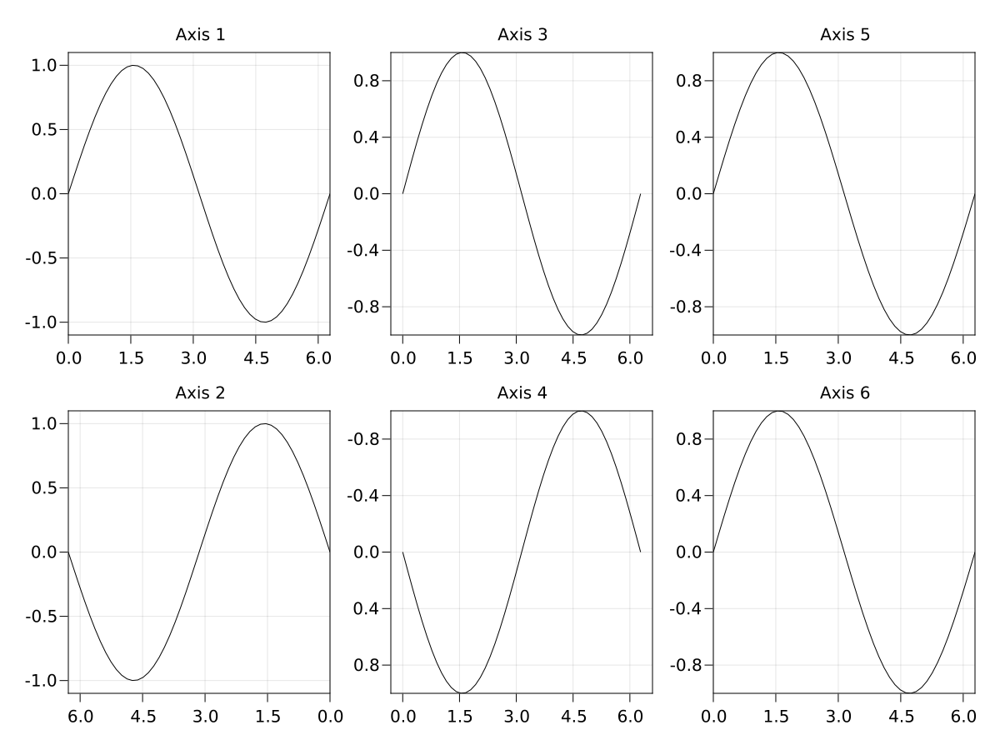
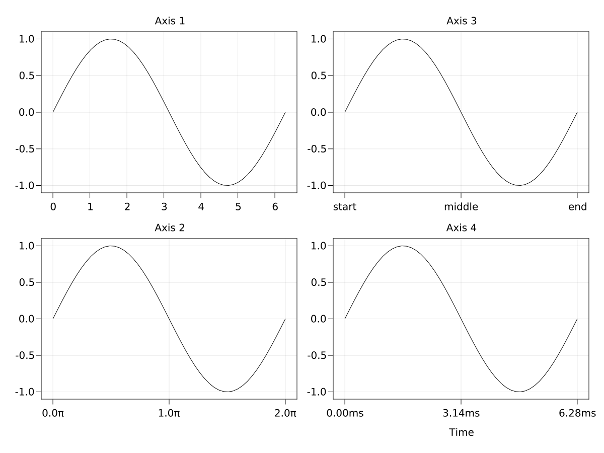
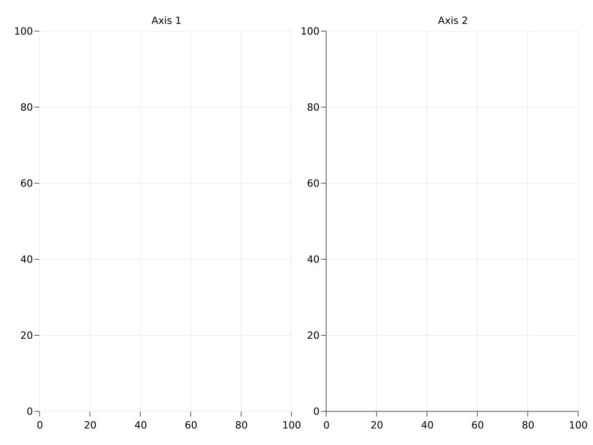
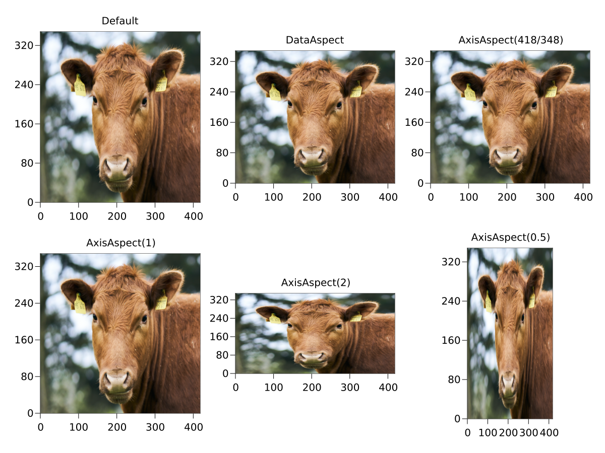
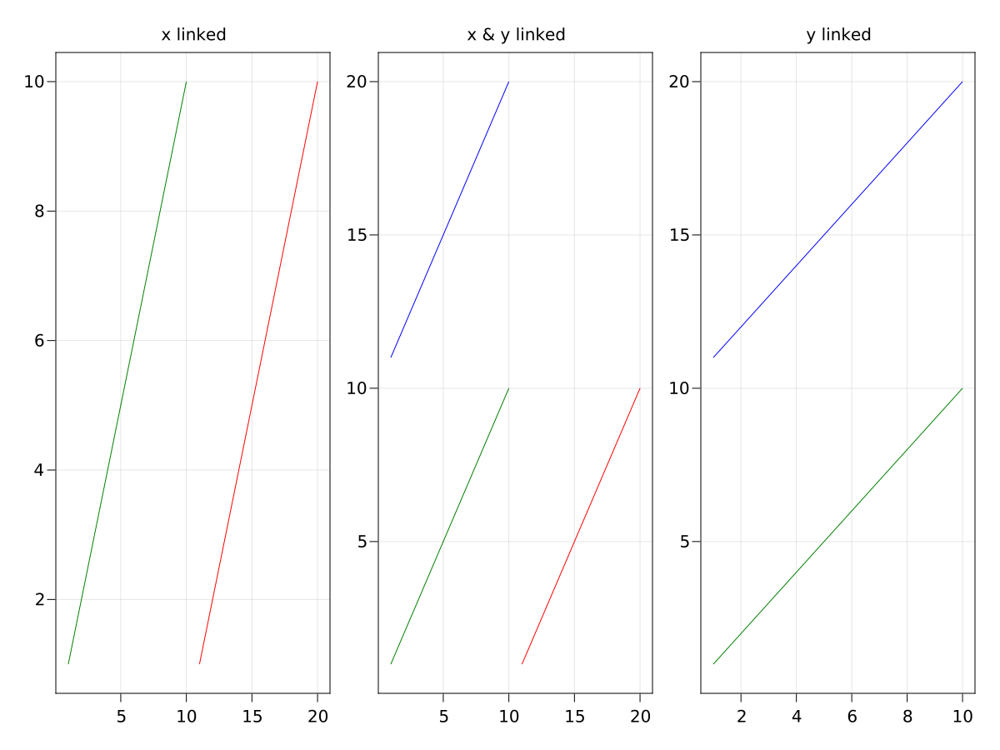

Creating an LAxis
The LAxis is a 2D axis that works well with automatic layouts. Here's how you create one
using AbstractPlotting.MakieLayout
using AbstractPlotting
scene, layout = layoutscene(resolution = (1200, 900))
ax = layout[1, 1] = LAxis(scene, xlabel = "x label", ylabel = "y label",
title = "Title")
Plotting Into an LAxis
You can use all the normal mutating 2D plotting functions with an LAxis. The only difference is, that they return the created plot object and not the axis (like Makie's base functions return the Scene). This is so that it is more convenient to save and manipulate the plot objects.
lineobject = lines!(ax, 0..10, sin, color = :red)
Setting Axis Limits and Reversing Axes
You can set axis limits with the functions xlims!, ylims! or limits!. The numbers are meant in the order left right for xlims!, and bottom top for ylims!. Therefore, if the second number is smaller than the first, the respective axis will reverse. You can manually reverse an axis by setting ax.xreversed = true or ax.yreversed = true.
Note that if you enforce an aspect ratio between x-axis and y-axis using autolimitaspect, the values you set with these functions will probably not be exactly what you get, but they will be changed to fit the chosen ratio.
using AbstractPlotting.MakieLayout
using AbstractPlotting
scene, layout = layoutscene(resolution = (1200, 900))
axes = layout[] = [LAxis(scene) for i in 1:2, j in 1:3]
xs = LinRange(0, 2pi, 50)
for (i, ax) in enumerate(axes)
ax.title = "Axis $i"
lines!(ax, xs, sin.(xs))
end
xlims!(axes[1], [0, 2pi]) # as vector
xlims!(axes[2], 2pi, 0) # separate, reversed
ylims!(axes[3], -1, 1) # separate
ylims!(axes[4], (1, -1)) # as tuple, reversed
limits!(axes[5], 0, 2pi, -1, 1) # x1, x2, y1, y2
limits!(axes[6], BBox(0, 2pi, -1, 1)) # as rectangle
Modifying ticks
Tick values are computed using get_tickvalues(ticks, vmin, vmax), where ticks is either the ax.xticks or ax.yticks attribute and the limits of the respective axis are vmin and vmax.
To create the actual tick labels, get_ticklabels(format, ticks, values) is called, where format is ax.xtickformat or ax.ytickformat, ticks is the same as above, and values is the result of get_tickvalues.
The most common use cases are predefined. Additionally, custom tick finding behavior can be implemented by overloading get_tickvalues while custom formatting can be implemented by overloading get_ticklabels.
Here are the existing methods for get_tickvalues:
AbstractPlotting.MakieLayout.get_tickvalues — Functionget_tickvalues(::AbstractPlotting.Automatic, vmin, vmax)Calls the default tick finding algorithm, which could depend on the current LAxis state.
get_tickvalues(lt::LinearTicks, vmin, vmax)Runs a common tick finding algorithm to as many ticks as requested by the LinearTicks instance.
get_tickvalues(tup::Tuple{<:Any, <:Any}, vmin, vmax)Calls get_tickvalues(tup[1], vmin, vmax) where the first entry of the tuple should contain an iterable tick values and the second entry should contain an iterable of the respective labels.
get_tickvalues(tickvalues, vmin, vmax)Uses tickvalues directly.
And here are the existing methods for get_ticklabels:
AbstractPlotting.MakieLayout.get_ticklabels — Functionget_ticklabels(formatter, ticks, values)Forwards to get_ticklabels(formatter, values) if no specialization exists.
get_ticklabels(::AbstractPlotting.Automatic, tup::Tuple{<:Any, <:Any}, values)Returns the second entry of tup, which should be an iterable of strings, as the tick labels for values.
get_ticklabels(::AbstractPlotting.Automatic, values)Gets tick labels by applying Showoff.showoff to values.
get_ticklabels(formatfunction::Function, values)Gets tick labels by applying formatfunction to values.
get_ticklabels(formatstring::AbstractString, values)Gets tick labels by formatting each value in values according to a Formatting.format format string.
Here are a couple of examples that show off different settings for ticks and formats.
using AbstractPlotting.MakieLayout
using AbstractPlotting
scene, layout = layoutscene(resolution = (1200, 900))
axes = layout[] = [LAxis(scene) for i in 1:2, j in 1:2]
xs = LinRange(0, 2pi, 50)
for (i, ax) in enumerate(axes)
ax.title = "Axis $i"
lines!(ax, xs, sin.(xs))
end
axes[1].xticks = 0:6
axes[2].xticks = 0:pi:2pi
axes[2].xtickformat = xs -> ["$(x/pi)π" for x in xs]
axes[3].xticks = (0:pi:2pi, ["start", "middle", "end"])
axes[4].xticks = 0:pi:2pi
axes[4].xtickformat = "{:.2f}ms"
axes[4].xlabel = "Time"
Hiding Axis Spines and Decorations
You can hide all axis elements manually, by setting their specific visibility attributes to false, like xticklabelsvisible, but that can be tedious. There are a couple of convenience functions for this.
To hide spines, you can use hidespines!.
using AbstractPlotting.MakieLayout
using AbstractPlotting
scene, layout = layoutscene(resolution = (1200, 900))
ax1 = layout[1, 1] = LAxis(scene, title = "Axis 1")
ax2 = layout[1, 2] = LAxis(scene, title = "Axis 2")
hidespines!(ax1)
hidespines!(ax2, :t, :r) # only top and right
To hide decorations, you can use hidedecorations!, or the specific hidexdecorations! and hideydecorations!. When hiding, you can set label = false, ticklabels = false, ticks = false or grid = false as keyword arguments if you want to keep those elements. It's common, e.g., to hide everything but the grid lines in facet plots.
Controlling Axis Aspect Ratios
If you're plotting images, you might want to force a specific aspect ratio of an axis, so that the images are not stretched. The default is that an axis uses all of the available space in the layout. You can use AxisAspect and DataAspect to control the aspect ratio. For example, AxisAspect(1) forces a square axis and AxisAspect(2) results in a rectangle with a width of two times the height. DataAspect uses the currently chosen axis limits and brings the axes into the same aspect ratio. This is the easiest to use with images. A different aspect ratio can only reduce the axis space that is being used, also it necessarily has to break the layout a little bit.
using AbstractPlotting.MakieLayout
using AbstractPlotting
using FileIO
scene, layout = layoutscene(resolution = (1200, 900))
axes = [LAxis(scene) for i in 1:2, j in 1:3]
tightlimits!.(axes)
layout[1:2, 1:3] = axes
img = rotr90(load("../assets/cow.png"))
for ax in axes
image!(ax, img)
end
axes[1, 1].title = "Default"
axes[1, 2].title = "DataAspect"
axes[1, 2].aspect = DataAspect()
axes[1, 3].title = "AxisAspect(418/348)"
axes[1, 3].aspect = AxisAspect(418/348)
axes[2, 1].title = "AxisAspect(1)"
axes[2, 1].aspect = AxisAspect(1)
axes[2, 2].title = "AxisAspect(2)"
axes[2, 2].aspect = AxisAspect(2)
axes[2, 3].title = "AxisAspect(0.5)"
axes[2, 3].aspect = AxisAspect(0.5)
Controlling Data Aspect Ratios
If you want the content of an axis to adhere to a certain data aspect ratio, there is another way than forcing the aspect ratio of the whole axis to be the same, and possibly breaking the layout. This works via the axis attribute autolimitaspect. It can either be set to nothing which means the data limits can have any arbitrary aspect ratio. Or it can be set to a number, in which case the targeted limits of the axis (that are computed by autolimits!) are enlarged to have the correct aspect ratio.
You can see the different ways to get a plot with an unstretched circle, using different ways of setting aspect ratios, in the following example.
using AbstractPlotting.MakieLayout
using AbstractPlotting
using Animations
# scene setup for animation
###########################################################
container_scene = Scene(camera = campixel!, resolution = (1200, 1200))
t = Node(0.0)
a_width = Animation([1, 7], [1200.0, 800], sineio(n=2, yoyo=true, postwait=0.5))
a_height = Animation([2.5, 8.5], [1200.0, 800], sineio(n=2, yoyo=true, postwait=0.5))
scene_area = lift(t) do t
IRect(0, 0, round(Int, a_width(t)), round(Int, a_height(t)))
end
scene = Scene(container_scene, scene_area, camera = campixel!)
rect = poly!(scene, scene_area,
raw=true, color=RGBf0(0.97, 0.97, 0.97), strokecolor=:transparent, strokewidth=0)[end]
outer_layout = GridLayout(scene, alignmode = Outside(30))
# example begins here
###########################################################
layout = outer_layout[1, 1] = GridLayout()
titles = ["aspect enforced\nvia layout", "axis aspect\nset directly", "no aspect enforced", "data aspect conforms\nto axis size"]
axs = layout[1:2, 1:2] = [LAxis(scene, title = t) for t in titles]
for a in axs
lines!(a, Circle(Point2f0(0, 0), 100f0))
end
rowsize!(layout, 1, Fixed(400))
# force the layout cell [1, 1] to be square
colsize!(layout, 1, Aspect(1, 1))
axs[2].aspect = 1
axs[4].autolimitaspect = 1
rects = layout[1:2, 1:2] = [LRect(scene, color = (:black, 0.05),
strokecolor = :transparent) for _ in 1:4]
record(container_scene, "example_circle_aspect_ratios.mp4", 0:1/30:9; framerate=30) do ti
t[] = ti
endLinking axes
You can link axes to each other. Every axis simply keeps track of a list of other axes which it updates when it is changed itself. You can link x and y dimensions separately.
using AbstractPlotting
using AbstractPlotting.MakieLayout
scene, layout = layoutscene(resolution = (1200, 900))
layout[1, 1:3] = axs = [LAxis(scene) for i in 1:3]
linkxaxes!(axs[1:2]...)
linkyaxes!(axs[2:3]...)
axs[1].title = "x linked"
axs[2].title = "x & y linked"
axs[3].title = "y linked"
for i in 1:3
lines!(axs[i], 1:10, 1:10, color = "green")
if i != 1
lines!(axs[i], 1:10, 11:20, color = "blue")
end
if i != 3
lines!(axs[i], 11:20, 1:10, color = "red")
end
end
Axis interaction
You can zoom in an axis by scrolling and pan by right-clicking and dragging. The limits can be reset using ctrl + click. Alternatively, you can just call autolimits! on the axis.
For some axes you might want to limit zooming and panning to one dimension or disable it completely. This can be achieved using the attributes xpanlock, ypanlock, xzoomlock and yzoomlock.
# an LAxis that can only be zoomed and panned horizontally, for example for
# temporal signals like audio
ax = LAxis(scene, ypanlock = true, yzoomlock = true)You can also interactively limit zoom and pan directions by pressing and holding a button during zooming or panning. By default those buttons are x and y, respectively, but you can change them with the attributes xpankey, ypankey, xzoomkey and yzoomkey. Buttons can be found in AbstractPlotting.Keyboard, for example the x button is accessed as AbstractPlotting.Keyboard.x.